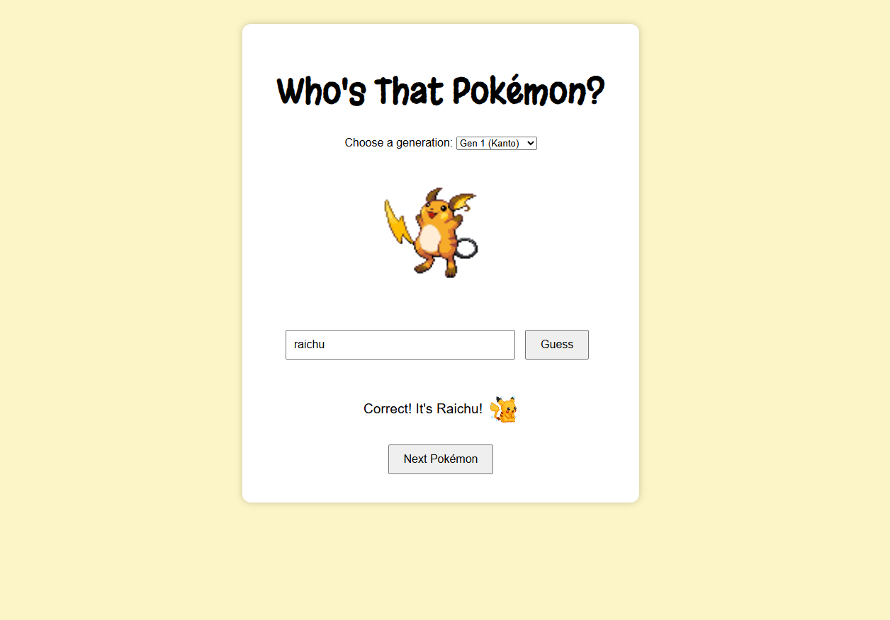

my projects
Here are a few projects that showcase my interests in front-end development, UI/UX design, and interactive experiences.
featured work
MoodSync – Personal Portfolio & Journaling
An online journaling site to allow users to input an online diary entry. Then the code will search for key words to attempt to identify a mood from the user, and link a Spotify playlist accordingly.
WeatherSpirits – Weather App
A cozy web app that utilizes the weather API to fetch weather of an inputted location.
Algorithm Visualizer
An interactive tool for visualizing data structure operations and algorithm runtimes. Helps students see how concepts like sorting, searching, and traversal actually work step-by-step. Still in development.
project walkthrough video
A short walkthrough video demonstrating the layout and interactions of MoodSync.